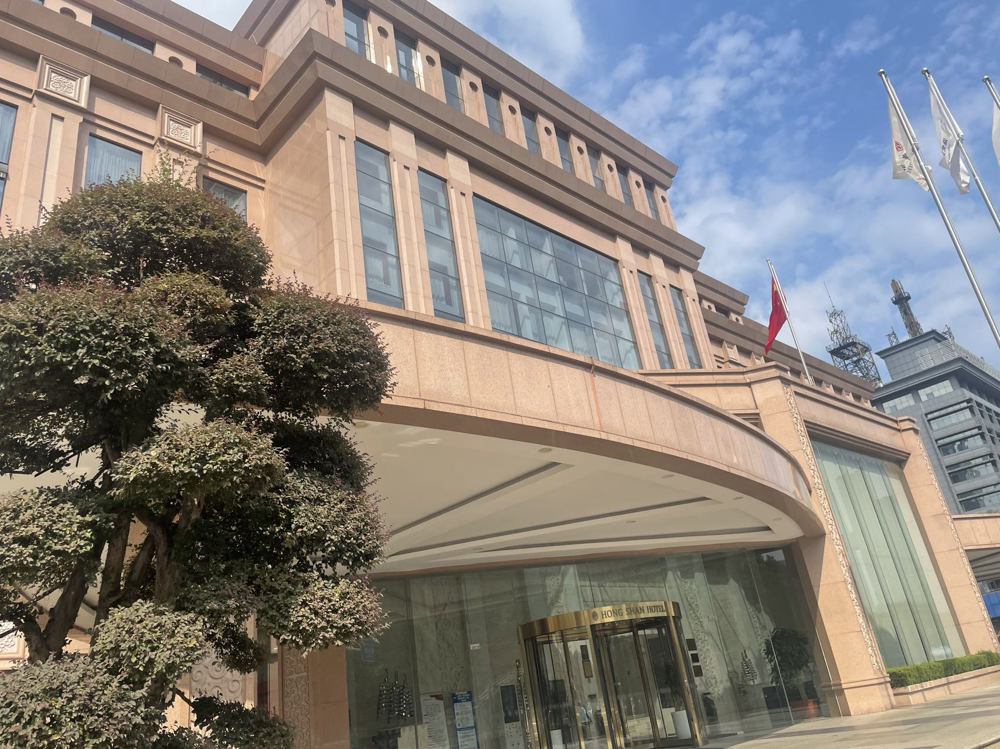
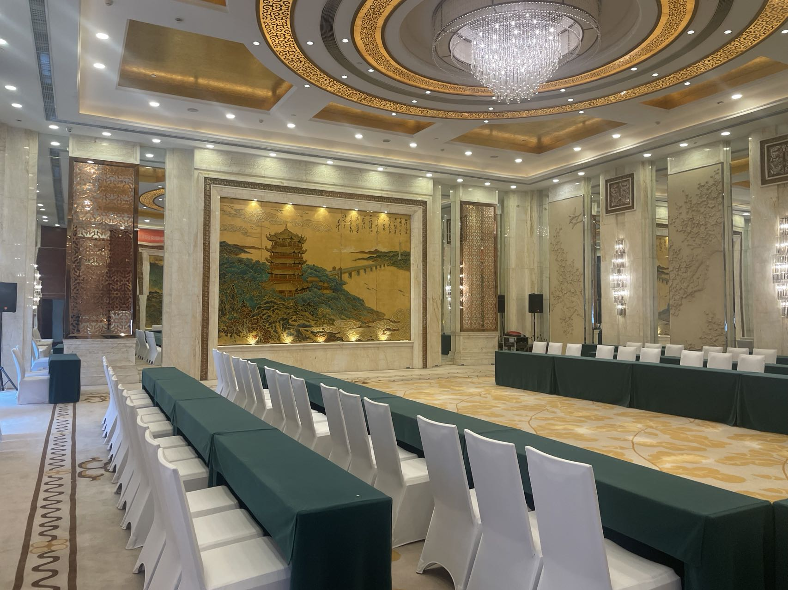
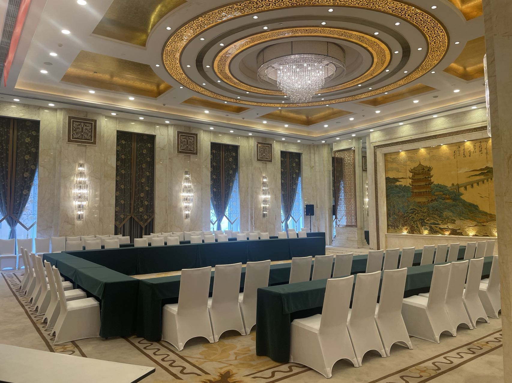
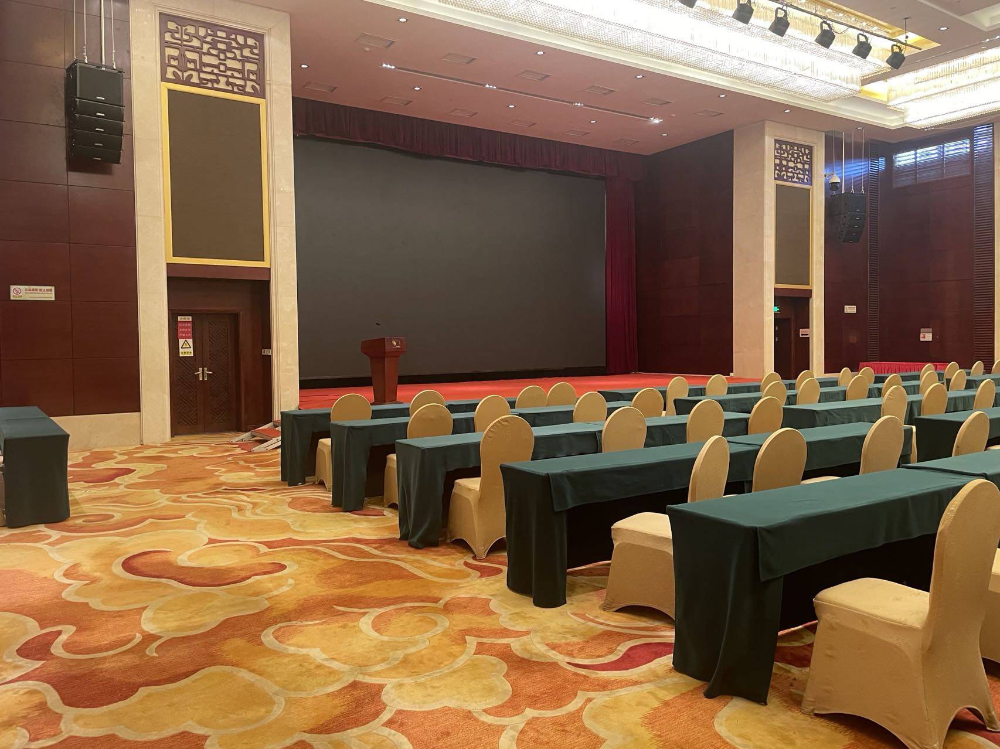

|
Venue
Ramada Plaza Guangzhou (313 Shougouling Road,Guangyuan Road East,Tianhe District,Guangzhou)
广州嘉鸿华美达广场酒店，广州 天河区 广园东瘦狗岭路313号
Conference room: Baiyun Hall
会议房间：白云厅
|

|
Accommodation
Accommodation is arranged in Ramada Plaza Guangzhou.
Single-bed rooms and twin-bed rooms are available.
We recommend this hotel as it will bring you an exciting hotel
experience by offering stylish and comfortable accommodation as well as
the professional service. The hotel is close to Guangzhou East Railway Station and subway station,
and conveniently connects to Guangzhou Baiyun International Airport.
|

|

|

|
|
Fee:
Single-Bed Room/Twin-Bed Room: 450 CNY/Day
|
How to Reach
By Air
The Guangzhou Baiyun International Airport (广州白云国际机场) is around 40km away from the hotel.
It provides accessibility to both domestic and international flights.
The Airport is well-connected with the major cities of China including Beijing, Shanghai, Shenzhen,
and most of the provincial capital cities. It takes about 40 mins to drive from the airport to the hotel.
By Rail
You may take the train to any of the following stations:
1. Guangzhou Railway Station (广州站), about 10km to the hotel.
2. Guangzhou East Railway Station (广州东站), about 3km to the hotel.
3. Guangzhou South Railway Station (广州南站), about 26km to the hotel.
Public Transportation
1. From Guangzhou Baiyun International Airport (IATA code: CAN):
- Take a taxi (about 120CNY, 40 min).
- First take the Metro Line #3(bound for Tiyuxilu) at Airport South Station,
take off at Guangzhou East Railway Station,
Exit J, and then walk around 600m to the hotel (about 7CNY, 1 hour).
2. From Guangzhou Railway Station:
- Take a taxi (about 30CNY, 20 min).
- First take the Metro Line #2(bound for Guangzhou South Railway Station) at Guangzhou Railway Station ,
transfer to Line #1(bound for Guangzhou East Railway Station)
at Gongyuanqian Station,
take off at Guangzhou East Railway Station,
Exit J, and then walk around 600m to the hotel (about 4CNY, 40 min).
3.From Guangzhou South Railway Station:
- Take a taxi (about 80CNY, 35 min).
- First take the Metro Line #2(bound for Jiahewanggang) at Guangzhou South Railway Station,
transfer to Line #1(bound for Guangzhou East Railway Station)
at Gongyuanqian Station,
take off at Guangzhou East Railway Station, Exit J,
and then walk around 600m to the hotel (about 6CNY, 1 hour).
4.From Guangzhou East Railway Station:
- Walk around 600m to the hotel (about 10 min).